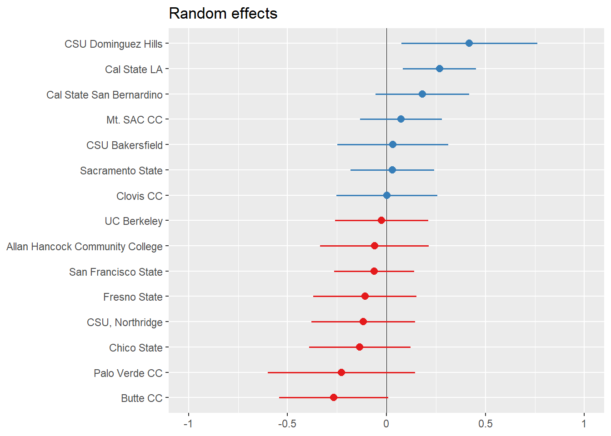

Show the code
fit_partpool_ff <- lmer(ff_numeric ~ (1 |school), data=bns_combined)
sjPlot::plot_model(fit_partpool_ff, type="re", sort.est = "(Intercept)", y.offset = .4, vline.color = "black")
Show the code
tab_model(fit_partpool_ff)| ff numeric | |||
|---|---|---|---|
| Predictors | Estimates | CI | p |
| (Intercept) | 2.08 | 1.94 – 2.23 | <0.001 |
| Random Effects | |||
| σ2 | 3.10 | ||
| τ00 school | 0.05 | ||
| ICC | 0.02 | ||
| N school | 15 | ||
| Observations | 2062 | ||
| Marginal R2 / Conditional R2 | 0.000 / 0.016 | ||